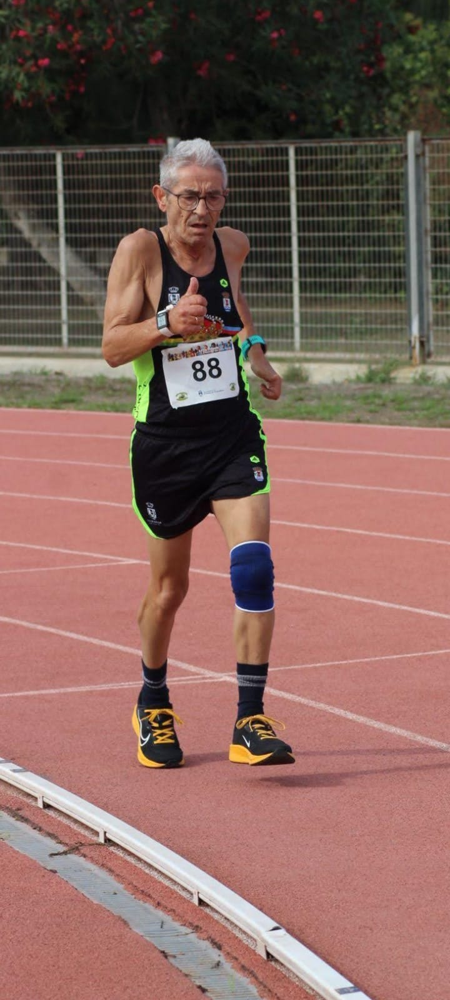

El comienzo
Mi historia en el atletismo comenzó casi sin darme cuenta. Al principio era simplemente una forma de hacer deporte, pero poco a poco descubrí que correr podía convertirse en mucho más.
Descubrir el mundo del atletismo despertó en mí una pasión que con el paso de los años acabaría formando parte de mi vida.

Mis primeras carreras
Llegó el momento de pasar de los entrenamientos a la competición.
Las primeras carreras fueron descubriendo poco a poco lo que significaba ponerse un dorsal, enfrentarse al recorrido y cruzar la línea de meta.
Cada carrera se convirtió en una nueva experiencia y en una oportunidad para seguir aprendiendo.

Atletismo de Nueva Jarilla
Uno de los momentos importantes de mi trayectoria fue formar parte del equipo Atletismo de Nueva Jarilla.
El atletismo dejó entonces de ser solamente una experiencia individual.
Entrenar, competir y compartir kilómetros con otros compañeros hizo que este deporte adquiriera todavía más sentido.

El primer pódium
Hay momentos que permanecen para siempre en la memoria.
Uno de ellos fue mi primer pódium.
Fue en el cross de Sanlúcar de Barrameda, donde conseguí la primera posición.
Aquella victoria tuvo un significado especial porque detrás de ella estaban todos los kilómetros, entrenamientos y esfuerzos realizados hasta llegar a ese momento.

Los años pasan
Con el paso de los años cambia la manera de entender el deporte.
También cambia la forma de entrenar, de competir y de afrontar cada nuevo reto.
El objetivo ya no es solamente mejorar una marca. También es disfrutar del camino y seguir encontrando motivos para continuar.

Las dificultades también forman parte del camino
Ninguna trayectoria deportiva está formada solamente por buenos momentos.
También existen dificultades, lesiones, momentos en los que hay que detenerse y situaciones que obligan a cambiar los planes.
A veces avanzar significa precisamente saber parar, recuperarse y volver a empezar.

Una nueva etapa
Una nueva etapa
El tiempo pasa, pero las ganas de seguir haciendo deporte permanecen.
Hoy comienza una nueva etapa. Una etapa diferente, en la que el objetivo no es demostrar nada a nadie, sino continuar disfrutando del camino, adaptándome a cada momento y buscando nuevos retos.
Porque cambiar la manera de avanzar no significa dejar de avanzar.
El camino continúa
Todavía quedan kilómetros por recorrer.
El camino continúa
Esta historia no termina aquí.
Después de tantos años, el atletismo sigue formando parte de mi vida.
Quizás cambien las distancias, los objetivos o la manera de entrenar, pero permanece lo más importante: las ganas de seguir adelante.
Mientras haya un camino por delante, habrá una razón para recorrerlo.